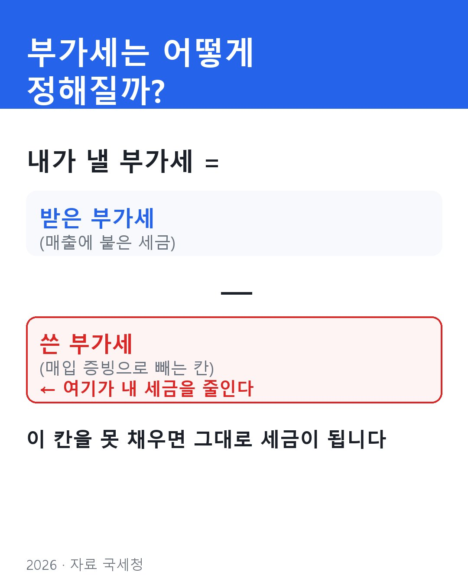
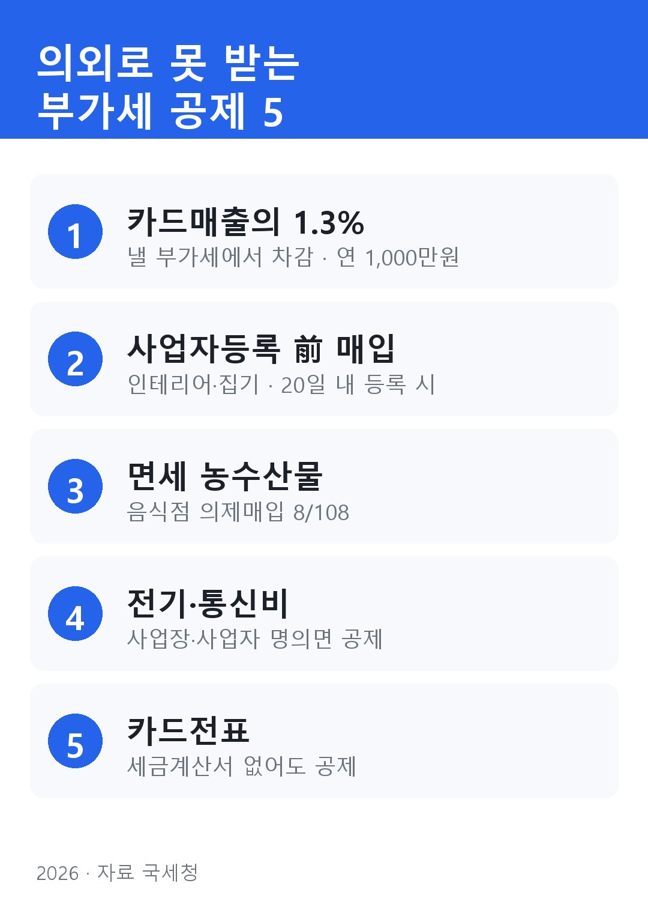
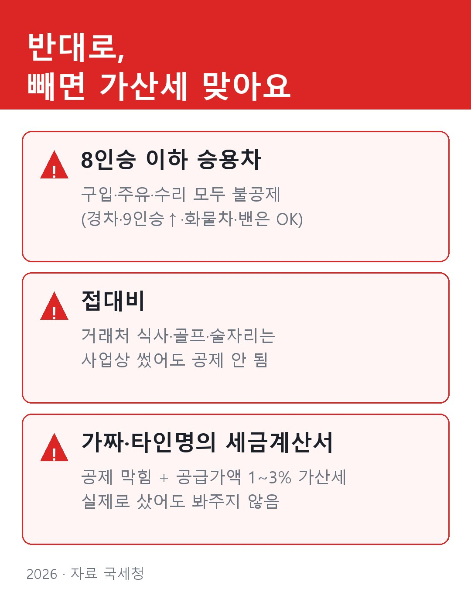

부가세 신고, 의외로 안 챙겨서 못 받는 공제 5가지 (가산세 함정까지)
7월이 부가세 신고 달이죠. 그런데 같은 동네에서 비슷하게 장사하는데, 누구는 세금을 꽤 내고 누구는 얼마 안 내요.
매출을 숨겨서가 아니에요. 매출은 카드사·국세청 전산에 다 잡혀서 숨길 수도 없어요.
차이는 딱 하나예요. 뺄 수 있는 걸 챙겼느냐.
부가세가 정해지는 자리는 여기 하나예요
복잡하게 볼 거 없어요.
낼 부가세 = 받은 부가세(매출) − 쓴 부가세(매입)
매출은 내가 못 줄여요. 그러니 결국 "매입에서 얼마나 빼느냐"가 내 세금을 정해요. 그런데 이 칸을 그냥 비워두고 신고하는 분들이 의외로 많아요. 몰라서요.

아래 다섯 개, 하나라도 해당되면 챙기세요.

① 카드로 판 돈, 거기서 1.3% 또 빼줘요
손님이 카드나 현금영수증으로 결제한 매출이 있죠? 그 금액의 1.3%를 낼 부가세에서 그냥 깎아줘요. 1년에 1,000만 원까지요.
연 매출 10억 이하 개인사장님이면 대부분 대상이에요. 신청 안 하면 안 줘요. 이거 하나로 몇십만 원 빠지는 분 많아요. (2026년까지 1.3%)
② 사업자 내기 전에 쓴 돈도 돼요
가게 열기 전에 인테리어 하고 집기 사잖아요. 그때는 사업자등록이 없으니까 "이건 못 빼겠지" 하고 버리는데, 빼줘요.
조건이 하나 있어요. 과세기간 끝나고 20일 안에 사업자등록을 마쳤어야 해요. 개업 준비할 때 받은 영수증·카드내역 버리지 마세요.
③ 음식점이면 — 재료값에도 숨은 공제가 있어요
쌀, 고기, 채소 같은 면세 농수산물은 살 때 부가세가 안 붙어요. 그래서 "뺄 게 없다" 생각하는데, '의제매입세액공제'라고 일정 비율을 공제해줘요. 음식점 개인사장님은 매입액의 8/108이요.
참고로 인터넷에 "2026년부터 음식점 공제 줄어든다"는 글이 도는데, 틀린 얘기예요. 2027년까지 그대로 유지돼요.
④ 가게 전기세·휴대폰 요금도 빼요
매장 전기·가스 요금, 사업용으로 쓰는 휴대폰 요금. 이것도 다 매입이에요. 단 사업자(또는 사업장) 명의로 돼 있어야 해요. 명의가 개인이면 안 빠지니까, 이참에 사업자 명의로 바꿔두세요.
⑤ 세금계산서 못 받았어도 — 카드전표면 돼요
"세금계산서를 안 끊어줬으니 못 빼겠네" 하는데, 사업용 카드로 긁었으면 그 전표가 세금계산서 역할을 해요. 부가세가 따로 표시돼 있으면 공제돼요. 그래서 사업 지출은 웬만하면 사업용 카드로 긁는 게 이득이에요.

이미 더 냈다면 — 돌려받을 수 있어요
작년에, 재작년에 이거 몰라서 더 냈다 싶으면 괜찮아요. '경정청구'라고, 5년 안에 신청하면 돌려받아요. 가산세도 없어요.
반대로 매출을 빠뜨려서 덜 낸 거면 빨리 '수정신고' 하세요. 이건 늦으면 가산세 붙어요.
올 7월 신고 전에, 위 다섯 개 중 내가 놓친 게 없는지만 한 번 훑어보세요. 똑같이 장사하고 세금만 더 내는 건 너무 아깝잖아요.